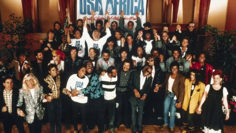

Meus vídeos favoritos
1- Heart Beat - YOASOBI

2- USA For Africa - We Are The World
>3- Merry Go round of life - versão de 10 horas - Chill Music Channel
 >
>
4- 5 motivos para fazer ADS
 >
>
5- Revisão de véspera Fatec 2023.2 - Estratégia vestibulares

© 2024 todos os direitos reservados ao youtube.com e aos proprietários dos vídeos.